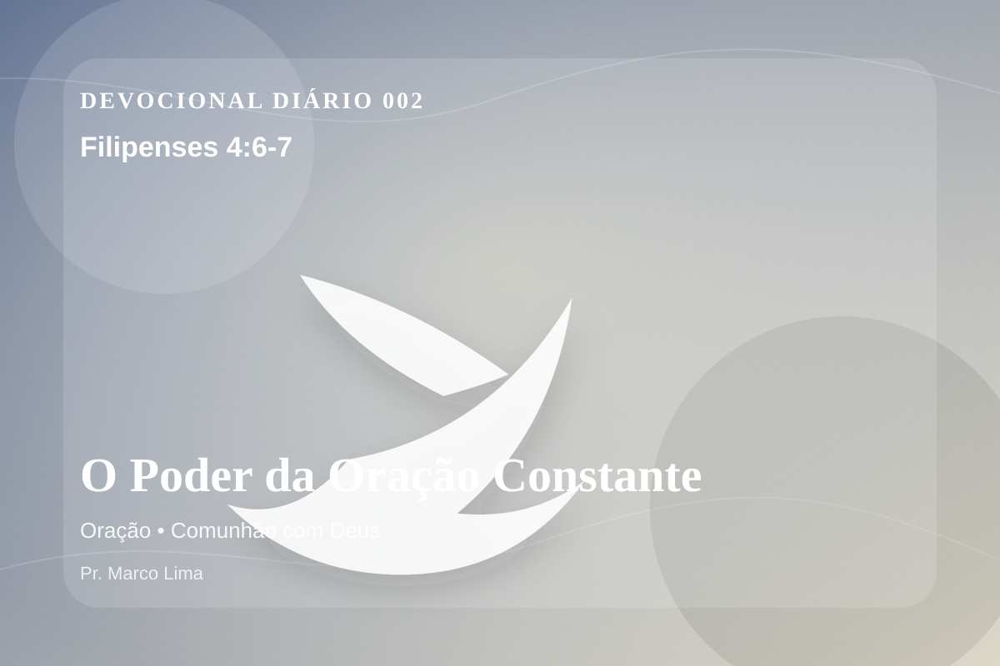

O Poder da Oração Constante
Não vos preocupeis com coisa alguma, mas em tudo, pela oração e súplicas, com ação de graças, sejam conhecidos os vossos pedidos diante de Deus. E a paz de Deus, que excede todo o entendimento, guardará os vossos corações e os vossos pensamentos em Cristo Jesus.
Reflexão
Dia 2: Este devocional começa com uma pergunta simples: que área da sua vida precisa ser iluminada por Filipenses 4:6-7 hoje?
A ansiedade é chamada para fora do coração e levada à presença de Deus em oração. A paz prometida não é ausência de luta, mas guarda espiritual para a mente e para os afetos em Cristo Jesus.
No dia 2 do plano anual, o tema de oração precisa ser recebido com simplicidade e seriedade. O ponto central não é apenas saber mais, mas viver de modo mais rendido. A oração é comunhão antes de ser pedido. Por meio dela, o coração ansioso aprende a se render, a vontade humana se submete ao Pai, e a paz de Deus guarda pensamentos e afetos.
Examine se existe orgulho, comparação, medo, culpa escondida ou autossuficiência impedindo sua resposta ao Senhor. A graça não nos humilha para destruir; ela nos quebra para reconstruir em Cristo.
Arrependimento não é apenas sentir peso na consciência; é voltar-se para Deus, abandonar o caminho que entristece o Senhor e confiar que a graça de Cristo é suficiente para perdoar e transformar.
Este é o evangelho que sustenta toda aplicação: Jesus Cristo morreu pelos pecadores, ressuscitou em vitória e chama cada pessoa a responder com fé, arrependimento e uma vida rendida ao Seu senhorio.
Cristo não veio apenas melhorar comportamentos, mas salvar pessoas. Na cruz, Ele trata a culpa; na ressurreição, Ele abre caminho para uma nova vida.
Leve esta Palavra para o ponto mais concreto do seu dia. O fruto da meditação aparecerá quando Cristo governar uma reação, uma prioridade ou uma escolha.
Aplicação Prática
- Leia Filipenses 4:6-7 lentamente e destaque uma palavra ou expressão central do texto.
- Confesse a Deus um pecado, resistência ou frieza espiritual que esta Palavra revelou.
- Declare sua fé em Jesus Cristo e pratique hoje uma atitude concreta de arrependimento e obediência.
Para Orar
Senhor Deus, eu recebo a Tua Palavra em Filipenses 4:6-7 com reverência. Reconheço que preciso de arrependimento, perdão e nova vida. Creio que Jesus Cristo morreu pelos meus pecados e ressuscitou para me salvar. Lava meu coração, governa minha vida e conduz-me em obediência simples ao Teu evangelho. Em nome de Jesus. Amém.
{kind=link}